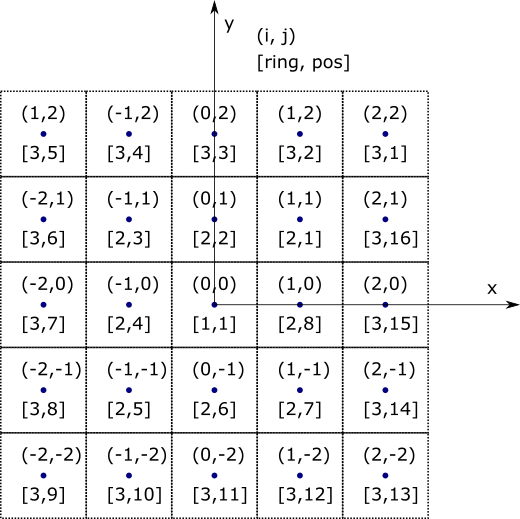
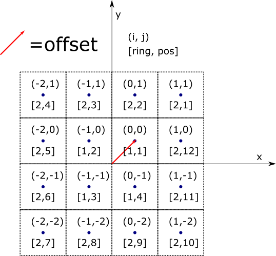

armi.reactor.grids module¶
This contains structured meshes in multiple geometries and spatial locators (i.e. locations).
Grids are objects that map indices (i, j, k) to spatial locations
(x,y,z) or (t,r,z). They are useful for arranging things in reactors, such as:
Fuel assemblies in a reactor
Plates in a heat exchanger
Pins in a fuel assembly
Blocks in a fuel assembly (1-D)
Fast reactors often use a hexagonal grid, while other reactors may be better suited for Cartesian or RZT grids. This module contains representations of all these.
Grids can be defined by any arbitrary combination of absolute grid boundaries and
unit step directions.
Associated with grids are IndexLocations. Each of these maps
to a single cell in a grid, or to an arbitrary point in the continuous space represented
by a grid. When a Grid` is built, it builds a collection of IndexLocations, one
for each cell.
In the ARMI armi.reactor module, each object is assigned a locator either from
a grid or in arbitrary, continuous space (using a CoordinateLocation) on the
spatialLocator attribute.
Below is a basic example of how to use a 2-D grid:
>>> grid = CartesianGrid.fromRectangle(1.0, 1.0) # 1 cm square-pitch Cartesian grid
>>> location = grid[1,2,0]
>>> location.getGlobalCoordinates()
array([ 1., 2., 0.])
Grids can be chained together in a parent-child relationship. This is often used in ARMI
where a 1-D axial grid (e.g. in an assembly) is being positioned in a core or spent-fuel
pool. See example in
armi.reactor.tests.test_grids.TestSpatialLocator.test_recursion().
The “radial” (ring, position) indexing used in DIF3D can be converted to and from the
more quasi-Cartesian indexing in a hex mesh easily with the utility methods
HexGrid.getRingPos() and indicesToRingPos().
This module is designed to satisfy the spatial arrangement requirements of the
Reactor package.
Throughout the module, the term global refers to the top-level coordinate system while the word local refers to within the current coordinate system defined by the current grid.
- class armi.reactor.grids.GridParameters(unitSteps, bounds, unitStepLimits, offset, geomType, symmetry)¶
Bases:
tupleCreate new instance of GridParameters(unitSteps, bounds, unitStepLimits, offset, geomType, symmetry)
- bounds¶
Alias for field number 1
- geomType¶
Alias for field number 4
- offset¶
Alias for field number 3
- symmetry¶
Alias for field number 5
- unitStepLimits¶
Alias for field number 2
- unitSteps¶
Alias for field number 0
- class armi.reactor.grids.LocationBase(i, j, k, grid)[source]¶
Bases:
objectA namedtuple-like object for storing location information.
It’s immutable (you can’t set things after construction) and has names.
Notes
This was originally a namedtuple but there was a somewhat unbelievable bug in Python 2.7.8 where unpickling a reactor full of these ended up inexplicably replacing one of them with an AssemblyParameterCollection. The bug did not show up in Python 3.
Converting to this class solved that problem.
- property i¶
- property j¶
- property k¶
- property grid¶
- class armi.reactor.grids.IndexLocation(i, j, k, grid)[source]¶
Bases:
armi.reactor.grids.LocationBaseAn immutable location representing one cell in a grid.
The locator is intimately tied to a grid and together, they represent a grid cell somewhere in the coordinate system of the grid.
gridis not in the constructor (must be added after construction ) because the extra argument (grid) gives an inconsistency between __init__ and __new__. Unfortunately this decision makes whipping up IndexLocations on the fly awkward. But perhaps that’s ok because they should only be created by their grids.- detachedCopy()[source]¶
Make a copy of this locator that is not associated with a grid.
See also
armi.reactor.reactors.detachuses this
- property parentLocation¶
Get the spatialLocator of the ArmiObject that this locator’s grid is anchored to.
For example, if this is one of many spatialLocators in a 2-D grid representing a reactor, then the
parentLocationis the spatialLocator of the reactor, which will often be aCoordinateLocation.
- property indices¶
Get the non-grid indices (i,j,k) of this locator.
This strips off the annoying
gridtagalong which is there to ensure proper equality (i.e. (0,0,0) in a storage rack is not equal to (0,0,0) in a core).It is a numpy array for two reasons:
It can be added and subtracted for the recursive computations through different coordinate systems
It can be written/read from the database.
- getCompleteIndices() Tuple[int, int, int][source]¶
Transform the indices of this object up to the top mesh.
The top mesh is either the one where there’s no more parent (true top) or when an axis gets added twice. Unlike with coordinates, you can only add each index axis one time. Thus a complete set of indices is one where an index for each axis has been defined by a set of 1, 2, or 3 nested grids.
This is useful for getting the reactor-level (i,j,k) indices of an object in a multi-layered 2-D(assemblies in core)/1-D(blocks in assembly) mesh like the one mapping blocks up to reactor in Hex reactors.
The benefit of that particular mesh over a 3-D one is that different assemblies can have different axial meshes, a common situation.
It will just return local indices for pin-meshes inside of blocks.
A tuple is returned so that it is easy to compare pairs of indices.
- getLocalCoordinates(nativeCoords=False)[source]¶
Return the coordinates of the center of the mesh cell here in cm.
- getGlobalCoordinates(nativeCoords=False)[source]¶
Get coordinates in global 3D space of the centroid of this object.
- getGlobalCellBase()[source]¶
Return the cell base (i.e. “bottom left”), in global coordinate system.
- class armi.reactor.grids.MultiIndexLocation(grid)[source]¶
Bases:
armi.reactor.grids.IndexLocationA collection of index locations that can be used as a spatialLocator.
This allows components with multiplicity>1 to have location information within a parent grid. The implication is that there are multiple discrete components, each one residing in one of the actual locators underlying this collection.
This class contains an implementation that allows a multi-index location to be used in the ARMI data model similar to a individual IndexLocation.
- detachedCopy()[source]¶
Make a copy of this locator that is not associated with a grid.
See also
armi.reactor.reactors.detachuses this
- getCompleteIndices() Tuple[int, int, int][source]¶
Transform the indices of this object up to the top mesh.
The top mesh is either the one where there’s no more parent (true top) or when an axis gets added twice. Unlike with coordinates, you can only add each index axis one time. Thus a complete set of indices is one where an index for each axis has been defined by a set of 1, 2, or 3 nested grids.
This is useful for getting the reactor-level (i,j,k) indices of an object in a multi-layered 2-D(assemblies in core)/1-D(blocks in assembly) mesh like the one mapping blocks up to reactor in Hex reactors.
The benefit of that particular mesh over a 3-D one is that different assemblies can have different axial meshes, a common situation.
It will just return local indices for pin-meshes inside of blocks.
A tuple is returned so that it is easy to compare pairs of indices.
- append(location: armi.reactor.grids.IndexLocation)[source]¶
- extend(locations: List[armi.reactor.grids.IndexLocation])[source]¶
- pop(location: armi.reactor.grids.IndexLocation)[source]¶
- property indices¶
Return indices for all locations.
Notes
Notice that this returns a list of all of the indices, unlike the
indices()implementation forIndexLocation. This is intended to make the behavior of getting the indices from the Locator symmetric with passing a list of indices to the Grid’s__getitem__()function, which constructs and returns aMultiIndexLocationcontaining those indices.
- class armi.reactor.grids.CoordinateLocation(i, j, k, grid)[source]¶
Bases:
armi.reactor.grids.IndexLocationA triple representing a point in space.
This is still associated with a grid. The grid defines the continuous coordinate space and axes that the location is within. This also links to the composite tree.
- getLocalCoordinates(nativeCoords=False)[source]¶
Return x,y,z coordinates in cm within the grid’s coordinate system.
- class armi.reactor.grids.Grid(unitSteps=(0, 0, 0), bounds=(None, None, None), unitStepLimits=((0, 1), (0, 1), (0, 1)), offset=None, geomType='', symmetry='', armiObject=None)[source]¶
Bases:
objectA connected set of cells characterized by indices mapping to space and vice versa.
The cells may be characterized by any mixture of regular repeating steps and user-defined steps in any direction.
For example, a 2-D hex lattice has constant, regular steps whereas a 3-D hex mesh may have user-defined axial meshes. Similar for Cartesian, RZT, etc.
- Parameters
unitSteps (tuple of tuples, optional) –
Describes the grid spatially as a function on indices. Each tuple describes how each
(x,y,or z)dimension is influenced by(i,j,k). In other words, it is:(dxi, dxj, jxk), (dyi, dyj, dyk), (dzi, dzj, dzk)
where
dmnis the distance (in cm) that dimensionmwill change as a function of indexn.Unit steps are used as a generic method for defining repetitive grids in a variety of geometries, including hexagonal and Cartesian. The tuples are not vectors in the direction of the translation, but rather grouped by direction. If the bounds argument is described for a direction, the bounds will be used rather than the unit step information. The default of (0, 0, 0) makes all dimensions insensitive to indices since the coordinates are calculated by the dot product of this and the indices. With this default, any dimension that is desired to change with indices should be defined with bounds. RZtheta grids are created exclusively with bounds.
bounds (3-tuple) – Absolute increasing bounds in cm including endpoints of a non-uniform grid. Each item represents the boundaries in the associated direction. Use Nones when unitSteps should be applied instead. Most useful for thetaRZ grids or other non-uniform grids.
unitStepLimits (3-tuple) – The limit of the steps in all three directions. This constrains step-defined grids to be finite so we can populate them with SpatialLocator objects.
offset (3-tuple, optional) – Offset in cm for each axis. By default the center of the (0,0,0)-th object is in the center of the grid. Offsets can move it so that the (0,0,0)-th object can be fully within a quadrant (i.e. in a Cartesian grid).
armiObject (ArmiObject, optional) – The ArmiObject that this grid describes. For example if it’s a 1-D assembly grid, the armiObject is the assembly. Note that
self.armiObject.spatialGridisself.
Examples
A 2D a rectangular grid with width (x) 2 and height (y) 3 would be:
>>> grid = Grid(unitSteps=((2, 0, 0), (0, 3, 0),(0, 0, 0)))
A regular hex grid with pitch 1 is:
>>> grid = Grid(unitSteps= ((sqrt(3)/2, 0.0, 0.0), (0.5, 1.0, 0.0), (0, 0, 0))
Note
For this unit hex the magnitude of the vector constructed using the 0th index of each tuple is 1.0.
Notes
Each dimension must either be defined through unitSteps or bounds. The combination of unitSteps with bounds was settled upon after some struggle to have one unified definition of a grid (i.e. just bounds). A hexagonal grid is somewhat challenging to represent with bounds because the axes are not orthogonal, so a unit-direction vector plus bounds would be required. And then the bounds would be wasted space because they can be derived simply by unit steps. Memory efficiency is important in this object so the compact representation of unitSteps-when-possible, bounds-otherwise was settled upon.
Design considerations include:
unitSteps are more intuitive as operations starting from the center of a cell, particularly with hexagons and rectangles. Otherwise the 0,0 position of a hexagon in the center of 1/3-symmetric hexagon is at the phantom bottom left of the hexagon.
Users generally prefer to input mesh bounds rather than centers (e.g. starting at 0.5 instead of 0.0 in a unit mesh is weird).
If we store bounds, computing bounds is simple and computing centers takes ~2x the effort. If we store centers, it’s the opposite.
Regardless of how we store things, we’ll need a Grid that has the lower-left assembly fully inside the problem (i.e. for full core Cartesian) as well as another one that has the lower-left assembly half-way or quarter-way sliced off (for 1/2, 1/4, and 1/8 symmetries). The
offsetparameter handles this.Looking up mesh boundaries (to define a mesh in another code) is generally more common than looking up centers (for plotting or measuring distance).
A grid can be anchored to the object that it is in with a backreference. This gives it the ability to traverse the composite tree and map local to global locations without having to duplicate the composite pattern on grids. This remains optional so grids can be used for non-reactor-package reasons. It may seem slightly cleaner to set the armiObject to the parent’s spatialLocator itself but the major disadvantage of this is that when an object moves, the armiObject would have to be updated. By anchoring directly to Composite objects, the parent is always up to date no matter where or how things get moved.
Unit step calculations use dot products and must not be polluted by the bound indices. Thus we reduce the size of the unitSteps tuple accordingly.
- reduce()[source]¶
Return the set of arguments used to create this Grid.
This is very much like the argument tuple from
__reduce__, but we do not implement__reduce__for real, because we are generally happy with__getstate__and__setstate__for pickling purposes. However, getting these arguments to__init__is useful for storing Grids to the database, as they are more stable (less likely to change) than the actual internal state of the objects.The return value should be hashable, such that a set of these can be created.
- property geomType: armi.reactor.geometry.GeomType¶
- property symmetry: armi.reactor.geometry.SymmetryType¶
- property offset¶
- getCoordinates(indices, nativeCoords=False) numpy.ndarray[source]¶
Return the coordinates of the center of the mesh cell at the given given indices in cm.
- locatorInDomain(locator: armi.reactor.grids.LocationBase, symmetryOverlap: Optional[bool] = False) bool[source]¶
Return whether the passed locator is in the domain represented by the Grid.
For instance, if we have a 1/3rd core hex grid, this would return False for locators that are outside of the first third of the grid.
- Parameters
locator (LocationBase) – The location to test
symmetryOverlap (bool, optional) – Whether grid locations along the symmetry line should be considered “in the represented domain”. This can be useful when assemblies are split along the domain boundary, with fractions of the assembly on either side.
- static getNeighboringCellIndices(i, j=0, k=0)[source]¶
Return the indices of the immediate neighbors of a mesh point in the plane.
- getSymmetricEquivalents(indices)[source]¶
Return a list of grid indices that contain matching contents based on symmetry.
The length of the list will depend on the type of symmetry being used, and potentially the location of the requested indices. E.g., third-core will return the two sets of indices at the matching location in the other two thirds of the grid, unless it is the central location, in which case no indices will be returned.
- cellIndicesContainingPoint(x, y=0.0, z=0.0)[source]¶
Return the indices of a mesh cell that contains a point.
- getLabel(indices)[source]¶
Get a string label from a 0-based spatial locator.
Returns a string representing i, j, and k indices of the locator
- getIndexBounds()[source]¶
Get min index and number of indices in this grid.
Step-defined grids would be infinite but for the step limits defined in the constructor.
Notes
This produces output that is intended to be passed to a
rangestatement.
- getBounds() Tuple[Optional[Sequence[float]], Optional[Sequence[float]], Optional[Sequence[float]]][source]¶
Return the grid bounds for each dimension, if present.
- getLocatorFromRingAndPos(ring, pos, k=0)[source]¶
Return the location based on ring and position.
- Parameters
See also
getIndicesFromRingAndPosThis implements the transform into i, j indices based on ring and position.
- static getIndicesFromRingAndPos(ring, pos)[source]¶
Return i, j indices given ring and position.
Note
This should be implemented as a staticmethod, since no Grids currently in exsistence actually need any instance data to perform this task, and staticmethods provide the convenience of calling the method without an instance of the class in the first place.
- getMinimumRings(n: int) int[source]¶
Return the minimum number of rings needed to fit
nobjects.Warning
While this is useful and safe for answering the question of “how many rings do I need to hold N things?”, is generally not safe to use it to answer “I have N things; within how many rings are they distributed?”. This function provides a lower bound, assuming that objects are densely-packed. If they are not actually densely packed, this may be unphysical.
- getRingPos(indices) Tuple[int, int][source]¶
Get ring and position number in this grid.
For non-hex grids this is just i and j.
A tuple is returned so that it is easy to compare pairs of indices.
- property pitch¶
The pitch of the grid.
Assumes 2-d unit-step defined (works for cartesian)
- class armi.reactor.grids.CartesianGrid(unitSteps=(0, 0, 0), bounds=(None, None, None), unitStepLimits=((0, 1), (0, 1), (0, 1)), offset=None, geomType='', symmetry='', armiObject=None)[source]¶
Bases:
armi.reactor.grids.GridGrid class representing a conformal Cartesian mesh.
Notes
In Cartesian, (i, j, k) indices map to (x, y, z) coordinates. In an axial plane (i, j) are as follows:
(-1, 1) ( 0, 1) ( 1, 1) (-1, 0) ( 0, 0) ( 1, 0) (-1,-1) ( 0,-1) ( 1,-1)
The concepts of ring and position are a bit tricker in Cartesian grids than in Hex, because unlike in the Hex case, there is no guaranteed center location. For example, when using a CartesianGrid to lay out assemblies in a core, there is only a single central location if the number of assemblies in the core is odd-by-odd; in an even-by-even case, there are four center-most assemblies. Therefore, the number of locations per ring will vary depending on the “through center” nature of
symmetry.Furthermore, notice that in the “through center” (odd-by-odd) case, the central index location, (0,0) is typically centered at the origin (0.0, 0.0), whereas with the “not through center” (even-by-even) case, the (0,0) index location is offset, away from the origin.
These concepts are illustrated in the example drawings below.
Grid example where the axes pass through the “center assembly” (odd-by-odd). Note that ring 1 only has one location in it.¶
Grid example where the axes lie between the “center assemblies” (even-by-even). Note that ring 1 has four locations, and that the center of the (0, 0)-index location is offset from the origin.¶
- classmethod fromRectangle(width, height, numRings=5, symmetry='', isOffset=False, armiObject=None)[source]¶
Build a finite step-based 2-D Cartesian grid based on a width and height in cm.
- Parameters
width (float) – Width of the unit rectangle
height (float) – Height of the unit rectangle
numRings (int) – Number of rings that the grid should span
symmetry (str) – The symmetry condition (see
armi.reactor.geometry)isOffset (bool) – If True, the origin of the Grid’s coordinate system will be placed at the bottom-left corner of the center-most cell. Otherwise, the origin will be placed at the center of the center-most cell.
armiObject (ArmiObject) – An object in a Composite model that the Grid should be bound to.
- getRingPos(indices)[source]¶
Return ring and position from indices.
Ring is the Manhattan distance from (0, 0) to the passed indices. Position counts up around the ring counter-clockwise from the quadrant 1 diagonal, like this:
7 6 5 4 3 2 1 8 | 24 9 | 23 10 -------|------ 22 11 | 21 12 | 20 13 14 15 16 17 18 19
Grids that split the central locations have 1 location in in inner-most ring, whereas grids without split central locations will have 4.
Notes
This is needed to support GUI, but should not often be used. i, j (0-based) indices are much more useful. For example:
>>> locator = core.spatialGrid[i, j, 0] # 3rd index is 0 for assembly >>> a = core.childrenByLocator[locator]
>>> a = core.childrenByLocator[core.spatialGrid[i, j, 0]] # one liner
- static getIndicesFromRingAndPos(ring, pos)[source]¶
Not implemented for Cartesian-see getRingPos notes.
- getPositionsInRing(ring)[source]¶
Return the number of positions within a ring.
Notes
The number of positions within a ring will change depending on whether the central position in the grid is at origin, or if origin is the point where 4 positions meet (i.e., the
_isThroughCentermethod returns True).
- locatorInDomain(locator, symmetryOverlap: Optional[bool] = False)[source]¶
Return whether the passed locator is in the domain represented by the Grid.
For instance, if we have a 1/3rd core hex grid, this would return False for locators that are outside of the first third of the grid.
- Parameters
locator (LocationBase) – The location to test
symmetryOverlap (bool, optional) – Whether grid locations along the symmetry line should be considered “in the represented domain”. This can be useful when assemblies are split along the domain boundary, with fractions of the assembly on either side.
- getSymmetricEquivalents(indices)[source]¶
Return a list of grid indices that contain matching contents based on symmetry.
The length of the list will depend on the type of symmetry being used, and potentially the location of the requested indices. E.g., third-core will return the two sets of indices at the matching location in the other two thirds of the grid, unless it is the central location, in which case no indices will be returned.
{kind=link}
{kind=link}
- class armi.reactor.grids.HexGrid(unitSteps=(0, 0, 0), bounds=(None, None, None), unitStepLimits=((0, 1), (0, 1), (0, 1)), offset=None, geomType='', symmetry='', armiObject=None)[source]¶
Bases:
armi.reactor.grids.GridHas 6 neighbors in plane.
Notes
In an axial plane (i, j) are as follows (second one is pointedEndUp):
( 0, 1) (-1, 1) ( 1, 0) ( 0, 0) (-1, 0) ( 1,-1) ( 0,-1) ( 0, 1) ( 1, 0) (-1, 1) ( 0, 0) ( 1,-1) (-1, 0) ( 0,-1)
- static fromPitch(pitch, numRings=25, armiObject=None, pointedEndUp=False, symmetry='')[source]¶
Build a finite step-based 2-D hex grid from a hex pitch in cm.
- Parameters
pitch (float) – Hex pitch (flat-to-flat) in cm
numRings (int, optional) – The number of rings in the grid to pre-populate with locatator objects. Even if positions are not pre-populated, locators will be generated there on the fly.
armiObject (ArmiObject, optional) – The object that this grid is anchored to (i.e. the reactor for a grid of assemblies)
pointedEndUp (bool, optional) – Rotate the hexagons 30 degrees so that the pointed end faces up instead of the flat.
symmetry (string, optional) – A string representation of the symmetry options for the grid.
- Returns
A functional hexagonal grid object.
- Return type
- property pitch¶
Get the hex-pitch of a regular hexagonal array.
See also
- static indicesToRingPos(i, j)[source]¶
Convert spatialLocator indices to ring/position.
One benefit it has is that it never has negative numbers.
Notes
Ring, pos index system goes in counterclockwise hex rings.
- getMinimumRings(n)[source]¶
Return the minimum number of rings needed to fit
nobjects.Notes
selfis not used because hex grids always behave the same w.r.t. rings/positions.
- getNeighboringCellIndices(i, j=0, k=0)[source]¶
Return the indices of the immediate neighbors of a mesh point in the plane.
Note that these neighbors are ordered counter-clockwise beginning from the 30 or 60 degree direction. Exact direction is dependent on pointedEndUp arg.
- getLabel(indices)[source]¶
Hex labels start at 1, and are ring/position based rather than i,j.
This difference is partially because ring/pos is easier to understand in hex geometry, and partially because it is used in some codes ARMI originally was focused on.
- static getIndicesFromRingAndPos(ring, pos)[source]¶
Return i, j indices given ring and position.
Note
This should be implemented as a staticmethod, since no Grids currently in exsistence actually need any instance data to perform this task, and staticmethods provide the convenience of calling the method without an instance of the class in the first place.
- getRingPos(indices)[source]¶
Get 1-based ring and position from normal indices.
See also
getIndicesFromRingAndPosdoes the reverse
- overlapsWhichSymmetryLine(indices)[source]¶
Return a list of which lines of symmetry this is on.
If none, returns [] If on a line of symmetry in 1/6 geometry, returns a list containing a 6. If on a line of symmetry in 1/3 geometry, returns a list containing a 3. Only the 1/3 core view geometry is actually coded in here right now.
Being “on” a symmetry line means the line goes through the middle of you.
- getSymmetricEquivalents(indices)[source]¶
Return a list of grid indices that contain matching contents based on symmetry.
The length of the list will depend on the type of symmetry being used, and potentially the location of the requested indices. E.g., third-core will return the two sets of indices at the matching location in the other two thirds of the grid, unless it is the central location, in which case no indices will be returned.
- triangleCoords(indices)[source]¶
Return 6 coordinate pairs representing the centers of the 6 triangles in a hexagon centered here.
Ignores z-coordinate and only operates in 2D for now.
- locatorInDomain(locator, symmetryOverlap: Optional[bool] = False)[source]¶
Return whether the passed locator is in the domain represented by the Grid.
For instance, if we have a 1/3rd core hex grid, this would return False for locators that are outside of the first third of the grid.
- Parameters
locator (LocationBase) – The location to test
symmetryOverlap (bool, optional) – Whether grid locations along the symmetry line should be considered “in the represented domain”. This can be useful when assemblies are split along the domain boundary, with fractions of the assembly on either side.
- isInFirstThird(locator, includeTopEdge=False)[source]¶
True if locator is in first third of hex grid.
- generateSortedHexLocationList(nLocs)[source]¶
Generate a list IndexLocations, sorted based on their distance from the center.
IndexLocation are taken from a full core.
Ties between locations with the same distance (e.g. A3001 and A3003) are broken by ring number then position number.
- class armi.reactor.grids.ThetaRZGrid(unitSteps=(0, 0, 0), bounds=(None, None, None), unitStepLimits=((0, 1), (0, 1), (0, 1)), offset=None, geomType='', symmetry='', armiObject=None)[source]¶
Bases:
armi.reactor.grids.GridA grid characterized by azimuthal, radial, and zeta indices.
The angular meshes are limited to 0 to 2pi radians. R and Zeta are as in other meshes.
See Figure 2.2 in Derstine 1984, ANL. [DIF3D].
- static fromGeom(geom, armiObject=None)[source]¶
Build 2-D R-theta grid based on a Geometry object.
- Parameters
geomInfo (list) – list of ((indices), assemName) tuples for all positions in core with input in radians
See also
armi.reactor.systemLayoutInput.SystemLayoutInput.readGeomXMLproduces the geomInfo
structureExamples
>>> grid = grids.ThetaRZGrid.fromGeom(geomInfo)
- getRingPos(indices)[source]¶
Get ring and position number in this grid.
For non-hex grids this is just i and j.
A tuple is returned so that it is easy to compare pairs of indices.
- static getIndicesFromRingAndPos(ring, pos)[source]¶
Return i, j indices given ring and position.
Note
This should be implemented as a staticmethod, since no Grids currently in exsistence actually need any instance data to perform this task, and staticmethods provide the convenience of calling the method without an instance of the class in the first place.
- getCoordinates(indices, nativeCoords=False)[source]¶
Return the coordinates of the center of the mesh cell at the given given indices in cm.
- indicesOfBounds(rad0, rad1, theta0, theta1, sigma=0.0001)[source]¶
Return indices corresponding to upper and lower radial and theta bounds.
- Parameters
rad0 (float) – inner radius of control volume
rad1 (float) – outer radius of control volume
theta0 (float) – inner azimuthal location of control volume in radians
theta1 (float) – inner azimuthal of control volume in radians
sigma (float) – acceptable relative error (i.e. if one of the positions in the mesh are within this error it’ll act the same if it matches a position in the mesh)
- Returns
tuple
- Return type
i, j, k of given bounds
- armi.reactor.grids.axialUnitGrid(numCells, armiObject=None)[source]¶
Build a 1-D unit grid in the k-direction based on a number of times. Each mesh is 1cm wide.
numCells + 1 mesh boundaries are added, since one block would require a bottom and a top.
- armi.reactor.grids.locatorLabelToIndices(label: str) Tuple[int, int, Optional[int]][source]¶
Convert a locator label to numerical i,j,k indices.
If there are only i,j indices, make the last item None
- armi.reactor.grids.addingIsValid(myGrid, parentGrid)[source]¶
True if adding a indices from one grid to another is considered valid.
In ARMI we allow the addition of a 1-D axial grid with a 2-D grid. We do not allow any other kind of adding. This enables the 2D/1D grid layout in Assemblies/Blocks but does not allow 2D indexing in pins to become inconsistent.